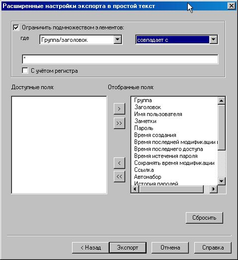

Внимание! Экспорт в текстовый формат важной информации может привести к проблемам с безопасностью. Данная операция создаёт незащищённую копию паролей из контейнера. Простого удаления данной копии недостаточно, и требуется использование дополнительных утилит для гарантированного удаления данных. Экспорт важной информации позволяет обойти меры защиты, предоставляемые Password Safe.
Примечание. Некоторые параметры текстового экспорта и импорта были изменены в версии 3.06. Здесь описывается текущий формат.
Текстовый файл с экспортированными данными:
Начинается со строки с заголовками.
Использует разделитель для замены переносов строк в многострочных заметках и точки («.») в заголовках. По умолчанию используется символ ‘»’ [Alt+0187], который может быть переопределён.
При импорте считается, что:
Первая строка содержит заголовки.
Используется разделитель для замены переносов строк в многострочных заметках и точки («.») в заголовках. По умолчанию используется символ ‘»’ [Alt+0187], но его можно переопределить.
Строка с заголовками для полного экспорта содержит следующие поля, разделённые табуляцией (в скобках приведен перевод, который не пишется в файл экспорта):
Group/Title (группа/заголовок)
Username (имя пользователя)
Password (пароль)
URL (ссылка)
Autotype (автонабор)
Created Time (время создания)
Password Modified Time (время изменения пароля)
Last Access Time (время последнего доступа)
Password Expiry Date (дата истечения пароля)
Password Expiry Interval (срок действия пароля)
Record Modified Time (время изменения записи)
Password Policy (политика создания паролей)
History (история)
Run Command (выполнить команду)
DCA (действие по двойному клику)
e-mail (электронная почта)
Notes (заметки)
С помощью расширенных настроек экспорта можно исключить ненужные поля из заголовка и экспортируемых записей. Расширенные настройки также позволяют выбрать подмножество элементов для экспорта.

При импорте из текстового файла строка с заголовками должна содержать имена столбцов, совпадающие с именами из указанного списка. Если какой-либо из заголовков повторяется, будут использованы данные из последнего столбца с повторяющимся именем. Если заголовок не совпадает ни с одним из указанных, данные из этого столбца игнорируются. Поля должны быть разделены определённым символом, который указывается в диалоге импорта.
Примечания:
При импорте данных в Password Safe должны присутствовать и содержать непустые значения поля «Group/Title» (заголовок) и «Password» (пароль). Это ограничение вызвано требованиями к содержанию элементов, созданных стандартным способом.
Порядок столбцов может быть любым. Соответствие полей определяется по заголовкам.
Формат данных
Имя столбца (поля)
Примечания
Group/Title (группа/заголовок)
Группы (если присутствуют) разделяются символом «.». Поле «Title» (заголовок) не может быть пустым или содержать символ-разделитель.
Содержимое поля с заметками должно быть заключено в двойные кавычки ("например, так").
Заметки не должны содержать символ-разделитель, так как при импорте он будет преобразован в перенос строки.
Примечание 1. Время может быть указано в одном из пяти форматов.
1.
гггг/ММ/дд чч:мм:сс
например, 2007/01/26 19:31:25
2.
ддд МММ дд чч:мм:сс гггг
например, Вск Окт 31 19:31:25 2010
3.
гггг-ММ-ддTчч:мм:сс
например, 2007-01-26T19:31:25
4.
0
оставить поле незаполненным
5.
now
Использовать время импорта
где:
гггг
Год в четырёхзначном виде. Значение от 1970 до 2038.
ММ
Месяц в двузначном виде: 01 = январь, 02 = февраль, и т. д.
дд
День месяца.
МММ
Краткое наименования месяца (язык сокращения для месяца зависит от текущей локали): Jan = January, Feb = February или Янв = январь, Фев = февраль и т. д.
ддд
Краткое наименование дня недели (язык сокращения для дня недели зависит от текущей локали): Mon = Monday, Tue = Tuesday, Вск = воскресенье, Пнд. = понедельник и т. д.
чч
Час в 24-часовом формате.
мм
Минуты в двузначном формате
сс
Секунды в двузначном формате
Примечание: формат 2 является выводом ANSI C функции «asctime», а формат 3 соответствует стандарту ISO 8601.
Примечание 2.История паролей состоит из заголовка, описывающего элементы истории и требуемого количества записей о старых паролях.
Заголовок истории паролей:
1 шестнадцатеричная цифра — наличие сохранённой истории паролей для данного элемента (0 = нет; 1 = есть);
2 шестнадцатеричные цифры — максимальное количество элементов истории для данного элемента;
2 шестнадцатеричные цифры — количество сохранённых паролей в истории.
Элемент истории паролей:
8 шестнадцатеричных цифр — время помещения пароля в историю;
4 шестнадцатеричные цифры — длина пароля в данном элементе;
строка символов — пароль, сохранённый в истории.
Примечание 3. Политика создания паролей экспортируется как текстовое поле «ffffnnnllluuudddsss» в шестнадцатеричном формате, например, «F000010004002005003». Это поле содержит 6 шестнадцатеричных чисел. Первое из них состоит из 4-х цифр, остальные — из 3-х.